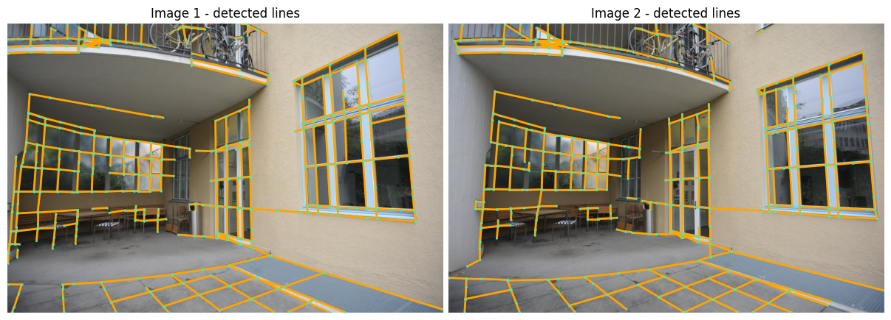

%%capture
!pip install kornia
!pip install kornia-rs
!pip install opencv-python --upgrade # Just for windows
!pip install matplotlibLine detection and matching example with SOLD2: Self-supervised Occlusion-aware Line Description and Detection
Intermediate
Line detection
Line matching
SOLD2
Self-supervised
kornia.feature
In this tutorial we will show how we can quickly perform line detection, and matching using
kornia.feature.sold2 API.

Setup
Install the libraries:
Now let’s download an image
import io
import requests
def download_image(url: str, filename: str = "") -> str:
filename = url.split("/")[-1].split("?")[0] if len(filename) == 0 else filename
# Download
bytesio = io.BytesIO(requests.get(url).content)
# Save file
with open(filename, "wb") as outfile:
outfile.write(bytesio.getbuffer())
return filename
download_image("https://github.com/cvg/SOLD2/raw/main/assets/images/terrace0.JPG")
download_image("https://github.com/cvg/SOLD2/raw/main/assets/images/terrace1.JPG")'terrace1.JPG'Then, we will load the libraries
import kornia as K
import kornia.feature as KF
import torchLoad the images and convert into torch tensors.
fname1 = "terrace0.JPG"
fname2 = "terrace1.JPG"
torch_img1 = K.io.load_image(fname1, K.io.ImageLoadType.RGB32)[None, ...]
torch_img2 = K.io.load_image(fname2, K.io.ImageLoadType.RGB32)[None, ...]
torch_img1.shape, torch_img2.shape(torch.Size([1, 3, 496, 744]), torch.Size([1, 3, 496, 744]))Prepare the data for the model, which is expected a batch of images in gray scale (shape: (Batch size, 1, Height, Width)).
The SOLD2 model was tuned for images in the range 400~800px when using config=None.
# First, convert the images to gray scale
torch_img1_gray = K.color.rgb_to_grayscale(torch_img1)
torch_img2_gray = K.color.rgb_to_grayscale(torch_img2)torch_img1_gray.shape, torch_img2_gray.shape(torch.Size([1, 1, 496, 744]), torch.Size([1, 1, 496, 744]))# then, stack the images to create/simulate a batch
imgs = torch.cat([torch_img1_gray, torch_img2_gray], dim=0)
imgs.shapetorch.Size([2, 1, 496, 744])Performs line detection and matching
Load the sold2 model with pre-trained=True, which will download and set pre-trained weights to the model.
%%capture
sold2 = KF.SOLD2(pretrained=True, config=None)Perform the model prediction
%%capture
with torch.inference_mode():
outputs = sold2(imgs)Organize the outputs for demo.
Attention: The detected line segments is in ij coordinates convention.
outputs.keys()dict_keys(['junction_heatmap', 'line_heatmap', 'dense_desc', 'line_segments'])line_seg1 = outputs["line_segments"][0]
line_seg2 = outputs["line_segments"][1]
desc1 = outputs["dense_desc"][0]
desc2 = outputs["dense_desc"][1]Perform line matching
with torch.inference_mode():
matches = sold2.match(line_seg1, line_seg2, desc1[None], desc2[None])valid_matches = matches != -1
match_indices = matches[valid_matches]
matched_lines1 = line_seg1[valid_matches]
matched_lines2 = line_seg2[match_indices]Plot lines detected and also the match
Plot functions adapted from original code.
import copy
import matplotlib
import matplotlib.colors as mcolors
import matplotlib.pyplot as plt
import numpy as np
def plot_images(imgs, titles=None, cmaps="gray", dpi=100, size=6, pad=0.5):
"""Plot a set of images horizontally.
Args:
imgs: a list of NumPy or PyTorch images, RGB (H, W, 3) or mono (H, W).
titles: a list of strings, as titles for each image.
cmaps: colormaps for monochrome images.
"""
n = len(imgs)
if not isinstance(cmaps, (list, tuple)):
cmaps = [cmaps] * n
figsize = (size * n, size * 3 / 4) if size is not None else None
fig, ax = plt.subplots(1, n, figsize=figsize, dpi=dpi)
if n == 1:
ax = [ax]
for i in range(n):
ax[i].imshow(imgs[i], cmap=plt.get_cmap(cmaps[i]))
ax[i].get_yaxis().set_ticks([])
ax[i].get_xaxis().set_ticks([])
ax[i].set_axis_off()
for spine in ax[i].spines.values(): # remove frame
spine.set_visible(False)
if titles:
ax[i].set_title(titles[i])
fig.tight_layout(pad=pad)
def plot_lines(lines, line_colors="orange", point_colors="cyan", ps=4, lw=2, indices=(0, 1)):
"""Plot lines and endpoints for existing images.
Args:
lines: list of ndarrays of size (N, 2, 2).
colors: string, or list of list of tuples (one for each keypoints).
ps: size of the keypoints as float pixels.
lw: line width as float pixels.
indices: indices of the images to draw the matches on.
"""
if not isinstance(line_colors, list):
line_colors = [line_colors] * len(lines)
if not isinstance(point_colors, list):
point_colors = [point_colors] * len(lines)
fig = plt.gcf()
ax = fig.axes
assert len(ax) > max(indices)
axes = [ax[i] for i in indices]
fig.canvas.draw()
# Plot the lines and junctions
for a, l, lc, pc in zip(axes, lines, line_colors, point_colors):
for i in range(len(l)):
line = matplotlib.lines.Line2D(
(l[i, 1, 1], l[i, 0, 1]),
(l[i, 1, 0], l[i, 0, 0]),
zorder=1,
c=lc,
linewidth=lw,
)
a.add_line(line)
pts = l.reshape(-1, 2)
a.scatter(pts[:, 1], pts[:, 0], c=pc, s=ps, linewidths=0, zorder=2)
def plot_color_line_matches(lines, lw=2, indices=(0, 1)):
"""Plot line matches for existing images with multiple colors.
Args:
lines: list of ndarrays of size (N, 2, 2).
lw: line width as float pixels.
indices: indices of the images to draw the matches on.
"""
n_lines = len(lines[0])
cmap = plt.get_cmap("nipy_spectral", lut=n_lines)
colors = np.array([mcolors.rgb2hex(cmap(i)) for i in range(cmap.N)])
np.random.shuffle(colors)
fig = plt.gcf()
ax = fig.axes
assert len(ax) > max(indices)
axes = [ax[i] for i in indices]
fig.canvas.draw()
# Plot the lines
for a, l in zip(axes, lines):
for i in range(len(l)):
line = matplotlib.lines.Line2D(
(l[i, 1, 1], l[i, 0, 1]),
(l[i, 1, 0], l[i, 0, 0]),
zorder=1,
c=colors[i],
linewidth=lw,
)
a.add_line(line)imgs_to_plot = [K.tensor_to_image(torch_img1), K.tensor_to_image(torch_img2)]
lines_to_plot = [line_seg1.numpy(), line_seg2.numpy()]
plot_images(imgs_to_plot, ["Image 1 - detected lines", "Image 2 - detected lines"])
plot_lines(lines_to_plot, ps=3, lw=2, indices={0, 1})
plot_images(imgs_to_plot, ["Image 1 - matched lines", "Image 2 - matched lines"])
plot_color_line_matches([matched_lines1, matched_lines2], lw=2)
Example of homography from line segment correspondences from SOLD2
Robust geometry estimation with Random sample consensus (RANSAC)
Load the model:
ransac = K.geometry.RANSAC(model_type="homography_from_linesegments", inl_th=3.0)Perform the model correspondencies
H_ransac, correspondence_mask = ransac(matched_lines1.flip(dims=(2,)), matched_lines2.flip(dims=(2,)))Wrap the image 1 to image 2
img1_warp_to2 = K.geometry.warp_perspective(torch_img1, H_ransac[None], (torch_img1.shape[-2:]))Plot the matched lines and wrapped image
plot_images(
imgs_to_plot,
["Image 1 - lines with correspondence", "Image 2 - lines with correspondence"],
)
plot_color_line_matches([matched_lines1[correspondence_mask], matched_lines2[correspondence_mask]], lw=2)plot_images(
[K.tensor_to_image(torch_img2), K.tensor_to_image(img1_warp_to2)],
["Image 2", "Image 1 wrapped to 2"],
)